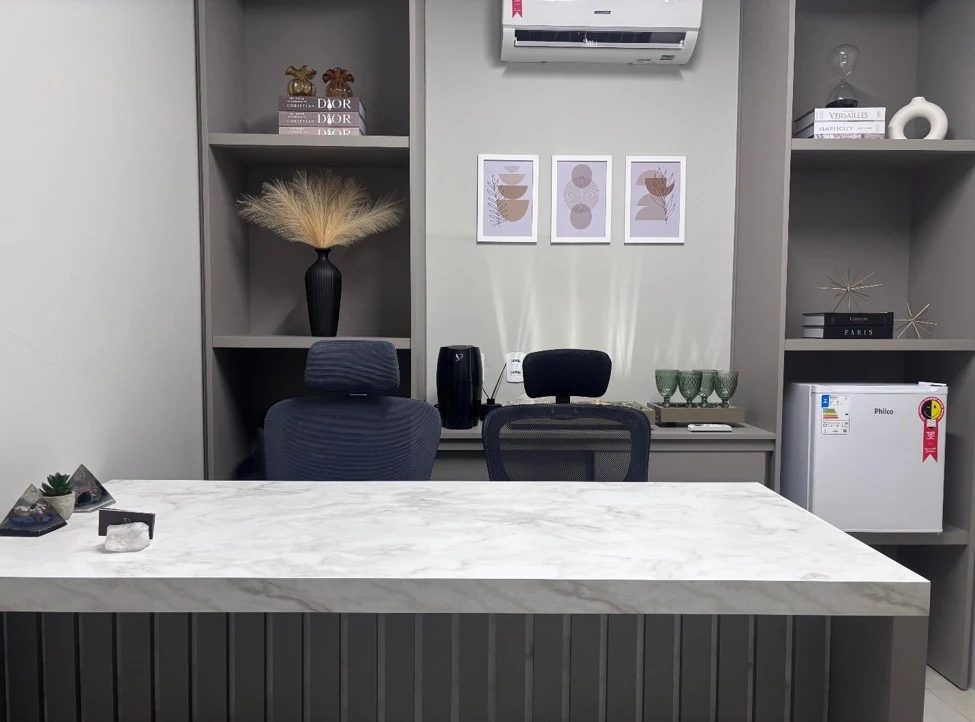

Documentação Clínica
Estruturação e revisão de documentos utilizados na relação médico-paciente.
A Silva Davim Advocacia oferece assessoria jurídica estratégica voltada à prevenção de riscos, proteção documental, conformidade ética e segurança da atividade profissional médica.

Na prática médica, decisões técnicas, comunicação com pacientes, documentação clínica, publicidade profissional e conformidade ética fazem parte da rotina diária.
A atuação jurídica preventiva busca fortalecer esses processos, reduzir vulnerabilidades e proporcionar maior segurança ao exercício profissional.
Mais do que atuar em demandas já existentes, nossa proposta é auxiliar médicos e clínicas na construção de uma prática mais organizada, estratégica e juridicamente protegida.
A atuação consultiva permite organizar documentos, fluxos, comunicação e respostas técnicas antes que situações sensíveis ganhem escala.
Estruturação e revisão de documentos utilizados na relação médico-paciente.
Atuação estratégica diante de riscos relacionados ao exercício da medicina.
Orientação jurídica para uma comunicação ética e alinhada às normas aplicáveis.
Proteção de dados pessoais e sensíveis no ambiente assistencial.
Defesa técnica em sindicâncias e processos perante os Conselhos de Medicina.
Organização jurídica de fluxos internos, políticas e procedimentos.
A atuação é indicada para profissionais e estruturas de saúde que buscam organização preventiva, orientação estratégica ou defesa técnica diante de demandas administrativas e judiciais.
Profissionais que desejam estruturar documentos, contratos, comunicação com pacientes e rotinas de atendimento com maior segurança.
Estruturas que precisam organizar fluxos internos, documentos assistenciais, relações profissionais, LGPD e conformidade ética.
Médicos e clínicas em crescimento, abertura ou reorganização, que buscam prevenir vulnerabilidades desde a base da operação.
Profissionais que necessitam de orientação ou defesa técnica em sindicâncias, processos ético-profissionais e procedimentos perante órgãos regulatórios.
Médicos e clínicas que precisam de análise estratégica, organização documental e atuação defensiva em ações relacionadas à prática médica.
Profissionais que utilizam redes sociais, sites ou campanhas e desejam adequar sua comunicação às normas éticas aplicáveis.
Atuação consultiva, preventiva e estratégica para médicos e clínicas que buscam maior segurança jurídica em sua rotina profissional.
Serviço voltado à análise, revisão, elaboração e adequação de documentos utilizados na rotina assistencial, como termos de consentimento, formulários de anamnese, fichas de evolução, autorizações e demais registros relacionados ao atendimento médico.
Orientação jurídica personalizada para médicos e clínicas em questões relacionadas ao exercício profissional, contratos, publicidade médica, comunicação com pacientes, relações profissionais, normas éticas e demandas da rotina médica.
Consultoria voltada à adequação à LGPD, com atenção ao tratamento de dados sensíveis em saúde, prontuários, autorizações, fluxos internos, segurança da informação e conformidade regulatória.
Defesa técnica de médicos perante Conselhos Regionais e Federal de Medicina, com análise documental, manifestações, defesa, recursos e acompanhamento estratégico.
Atuação na defesa de médicos e clínicas em demandas de responsabilidade civil médica, incluindo análise técnica do caso, organização documental, estratégia defensiva, elaboração de manifestações e acompanhamento processual.
Estruturação jurídica da gestão interna por meio de normas internas, procedimentos operacionais, protocolos administrativos, manuais da equipe e práticas de compliance voltadas à mitigação de riscos.
Consultoria para análise e adequação da publicidade médica, redes sociais, sites, campanhas, materiais institucionais e perfis profissionais, observando normas do CFM, legislação aplicável e princípios éticos.
Unimos visão preventiva, análise jurídica e atenção às particularidades de médicos, consultórios e clínicas.
Profissionais com atuação voltada ao Direito Médico e à LGPD aplicada à Saúde, oferecendo soluções jurídicas estratégicas para médicos e clínicas.
Priorizamos a identificação e redução de riscos jurídicos antes que eles se transformem em demandas administrativas ou judiciais.
Cada demanda é analisada considerando especialidade médica, rotina assistencial e realidade de cada profissional ou clínica.
Orientação baseada na legislação vigente e nas normas éticas e regulatórias aplicáveis ao exercício da medicina.
Traduzimos questões jurídicas complexas em orientações práticas, acessíveis, objetivas e tecnicamente fundamentadas.
Unimos análise técnica, visão preventiva e planejamento jurídico para apoiar decisões mais seguras na atividade médica.
O atendimento parte de uma leitura cuidadosa da realidade do médico ou da clínica, para que a estratégia jurídica seja proporcional ao risco e aplicável à rotina.
Análise inicial da demanda, da rotina profissional e das principais vulnerabilidades jurídicas.
Definição da melhor abordagem conforme o perfil do médico, da clínica e da situação apresentada.
Elaboração, revisão documental, orientação jurídica, defesa técnica em demandas administrativas e judiciais, ou estruturação preventiva conforme a necessidade.
Suporte contínuo para uma atuação profissional mais organizada, segura e alinhada às normas aplicáveis.
A atividade médica envolve responsabilidade técnica, decisões sensíveis e constante interação com pacientes, familiares, equipes, plataformas digitais e órgãos regulatórios.
Por isso, a atuação jurídica precisa ir além da resposta ao problema já instalado.
Na Silva Davim Advocacia, trabalhamos para fortalecer a segurança documental, orientar condutas preventivas, estruturar rotinas internas e oferecer defesa técnica quando a atuação contenciosa se torna necessária.

Imagem do espaço físico de atendimento da Silva Davim Advocacia, em Cuiabá/MT, divulgada em caráter exclusivamente informativo.
Espaço físicoEspaço físico da Silva Davim Advocacia, em Cuiabá/MT, destinado ao atendimento profissional e reservado de clientes. Imagem divulgada em caráter informativo, em observância às normas éticas da advocacia.
Algumas respostas iniciais para médicos, consultórios e clínicas que buscam apoio jurídico preventivo ou estratégico.
Não. Atendemos médicos autônomos, consultórios, clínicas médicas e profissionais da saúde que necessitam de suporte jurídico especializado.
Não. O escritório está sediado em Cuiabá/MT, mas realiza atendimento em todo o território nacional.
Preferencialmente antes do surgimento de conflitos, especialmente quando houver necessidade de revisar documentos, organizar a rotina da clínica, adequar publicidade médica, estruturar contratos ou prevenir riscos jurídicos.
Sim. Conforme a necessidade do caso, a atuação pode incluir elaboração, revisão ou adequação de documentos utilizados na rotina médica.
Sim. Atuamos desde a fase de sindicância até Processos Ético-Profissionais perante os Conselhos de Medicina.
Sim. Médicos e clínicas tratam dados pessoais e dados sensíveis de saúde, razão pela qual devem observar as regras da LGPD e adotar medidas adequadas de proteção, organização e segurança da informação.
Conte com uma assessoria jurídica estratégica voltada à proteção, organização e segurança da atividade profissional médica.